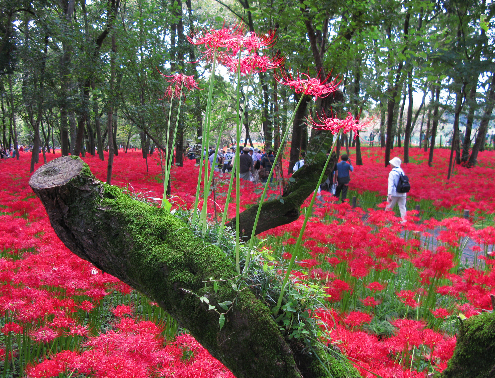

Lycoris radiata is a bulbous perennial with showy, bright-red flowers. It is most commonly known as a Spider Lily. When in full bloom, spindly stamens, likened to the image of spider legs, extend slightly upward and outward from the flower's center.[6] The flowers of the plant generally appear around late August to early September, before the leaves fully develop, on scapes rising 30–70 centimetres (12–28 in) from the ground. Four to six 2-inch long flowers, arranged in umbels, perch atop each plant stalk.[7] Individual flowers are irregular, with narrow segments which curve backwards.[8] The leaves, which tend to emerge in October, are a greyish-green color, parallel-sided, 0.5–1 cm (1/ 4 –3/ 8 in) wide and feature a paler central stripe. The plant retains its leaves throughout the winter season, but will begin to shed them away as temperatures start to warm in late spring.
Description
Taxonomy
The presumed original form ofLycoris radiata, known as L. radiata var. pumila, occurs only in China. It is a diploid, with 11 pairs of chromosomes (2N = 22), and is able to reproduce by seed. Triploid forms, with 33 chromosomes, are known as L. radiata var. radiata. These are widespread in China and also in Japan, from where the species was introduced into cultivation in America and elsewhere. The triploid forms are sterile, and reproduce only vegetatively, via bulbs. The Japanese triploids are genetically uniform. It has been suggested that they were introduced into Japan from China along with rice cultivation.[9]
In phylogenetic analyses based on chloroplast genes, Hori et al. found that all the other species of Lycoris they examined were nested within Lycoris radiata. They suggest that the "species" of Lycoris presently recognized may not be distinct.[9]
Cultivation
All plant species belonging to the genus Lycoris, including L. radiata, are native to East Asia.[10] The plant was first introduced into the United States in 1854 following the signing of the Treaty of Kanagawa, a peace treaty brokered between the United States of America and Japan which effectively opened up Japanese ports for trade with the U.S.[11] It is alleged that Captain William Roberts, a botany enthusiast and an ally of Commodore Matthew Calbraith Perry of the U.S Navy, returned to the U.S with only three bulbs of the red spider lily from this travels abroad.[12] The bulbs were then planted by his niece who found that they did not bloom until after the first good rain in the fall season. L. radiata has since become naturalized in North Carolina, Texas, Oklahoma, and many other southern states of the US. Since the Japanese variety of L. radiata is a sterile triploid, the introduced plants were also sterile and could only reproduce via bulb division. Today, red spider lilies are appreciated as ornamental and medicinal plants in various countries all across Asia, Europe and in the United States.[10]
Before being placed into the ground, L. radiata bulbs should be stored in a dry environment between 7–13 °C (45–55 °F). The bulbs are ideally planted during the spring in rich, well-drained soil (e.g. sandy with some clay), 20 cm (8 in) deep and 15–30 cm (6–12 in) apart from one another. When possible L. radiata ought to be placed in plots that either receive ample sunlight or are partially shaded. Once planted, the bulbs are best left undisturbed.[13] Lycoris radiata is not frost-hardy in countries like England, and so can only be grown under glass or in a very sheltered environment. In warm-summer climates such as the U.S. east of the Rocky Mountains, where there is sufficient summer heat to harden off the bulbs, the plants are hardy to around −18 °C (0 °F).[citation needed] Like other plants in the genus Lycoris, L. radiata remains dormant during the summer season, flowering on leafless scapes once the summer begins to transition into the fall.[10] Red spider lilies are sometimes referred to as magic lilies because It is said that the radiant red flowers appear to bloom "magically" from their unremarkably bare stalks.[14] Furthermore, in the environments in which they are commonly grown, L. radiata tend to bloom in step with the coming of the rainy season, and or the coming of the hurricane season, as well as the fall equinox. As such, spider lilies are also known as hurricane lilies or equinox lilies.[13]
Toxins and medicinal applications
Such is the matter regarding all plants belonging to the genus Lycoris, the bulbs of Lycoris radiata contain notable levels of toxicity. The toxicity of the bulbs may be attributed to the presence of the alkaloid, lycorine. If ingested, Lycoris radiata bulbs can cause a host of medical complications such as diarrhea, vomiting, convulsions and even death when cases are severe.[5] L. radiata plants also contain the alkaloid galantamine, an alkaloid compound known for its effectiveness against conditions of cognitive decline. Among other reasons, L.radiata plant populations in China have been intentionally cared for as so that galantamine may be harvested from the bulbs and processed into medicines developed to combat the ill-effects of Alzheimer's disease.[5] Of the many alkaloids produced by plants in the amaryllidaceae family, galantamine is noteworthy because it has been approved by the United States Food and Drug Administration (USDA) for the treatment of Alzheimer's disease.[15] Plants of the amaryllis family are all known to contain varying quantities of naturally occurring galantamine. The compound can be extracted in trace amounts from all throughout the leaves and roots of L. radiata, but is most abundantly found within the bulbs
In East Asian Culture
The Japanese common name for Lycoris radiata, higanbana (ヒガンバナ, 彼岸花),[16] literally means "flower of higan (Buddhist holiday around the autumnal equinox)."[16] Another popular Japanese name is manjushage (曼珠沙華)[16] (or manjushake[17]), taken from the name of a mythical flower described in Chinese translation of the Lotus Sutra. It is called by over 50 other local names in Japan.[17] Lycoris radiata first came to Japan from China around 700 A.D.[18] The flower has since become a cultural symbol, representing the arrival of fall. Red spider lilies are frequently seen in Japan growing along roadways and around the perimeters of rice fields and houses. The lilies are purposefully planted near rice fields in order to deter mice and other animals from invading the rice paddies; the poisonous bulbs are thought to keep the unwanted critters away.
In accordance with established traditions, many practitioners of Buddhism will celebrate the arrival of fall with a ceremony at the tombs of their ancestors. In order to pay tribute to the dead, red spider lilies are commonly planted on and around grave sites as a part of this ceremonial practice.[18] Since these scarlet flowers usually bloom near cemeteries around the time of the autumnal equinox, they are described in Chinese and Japanese translations of the Lotus Sutra as ominous flowers that grow in Hell, (Chinese: 黃泉), and guide the dead into the next reincarnation. Mock Joya relates their association with Japanese Christian martyrs in medieval times; their places of martyrdom were said to be marked by these flowers.[19] Because red spider lilies are associated with death, it is believed that one should never give a bouquet of these flowers.[18] Some legends have it that if you see someone whom you may never meet again, these flowers will bloom along the paths you take. Perhaps because of these sorrowful legends, Japanese people often use these flowers in funerals. Higanbana can be literally taken as the higan (the other or that shore of Sanzu River) flower, decorative and enjoyable, flower of the afterlife in gokuraku jyōdo (極楽浄土, gokuraku jyōdo).
Mentions
If you want to learn more about the red spider lily and it's significance in asian folklore, here is a link
Here are other relevant links such as plants and/or nature